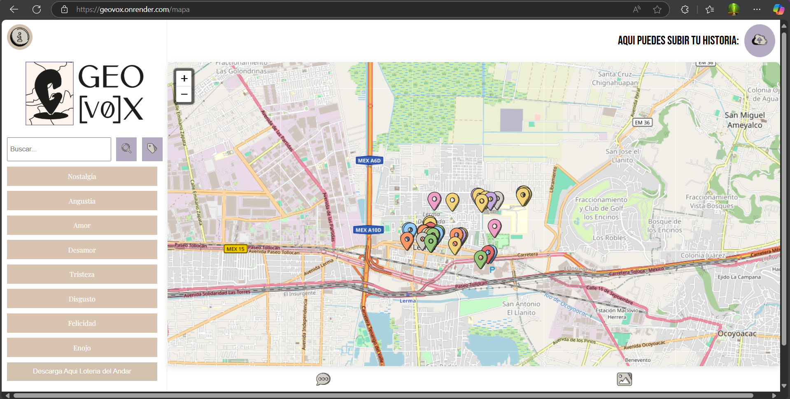
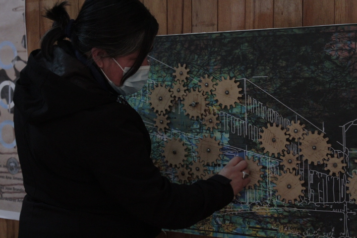
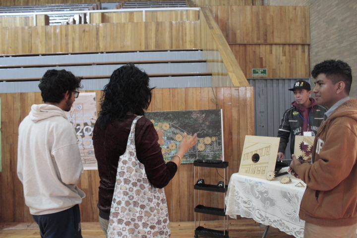
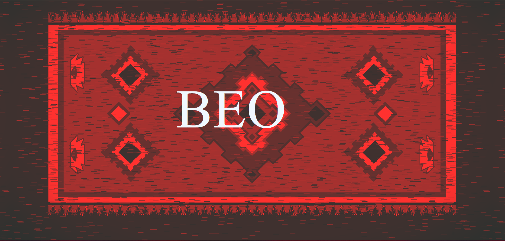
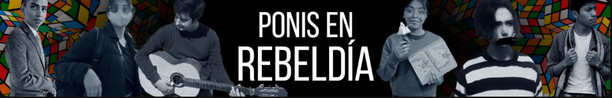
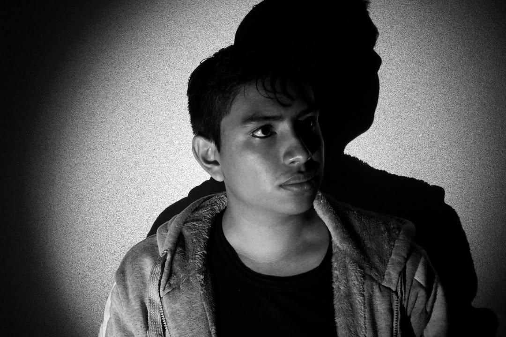
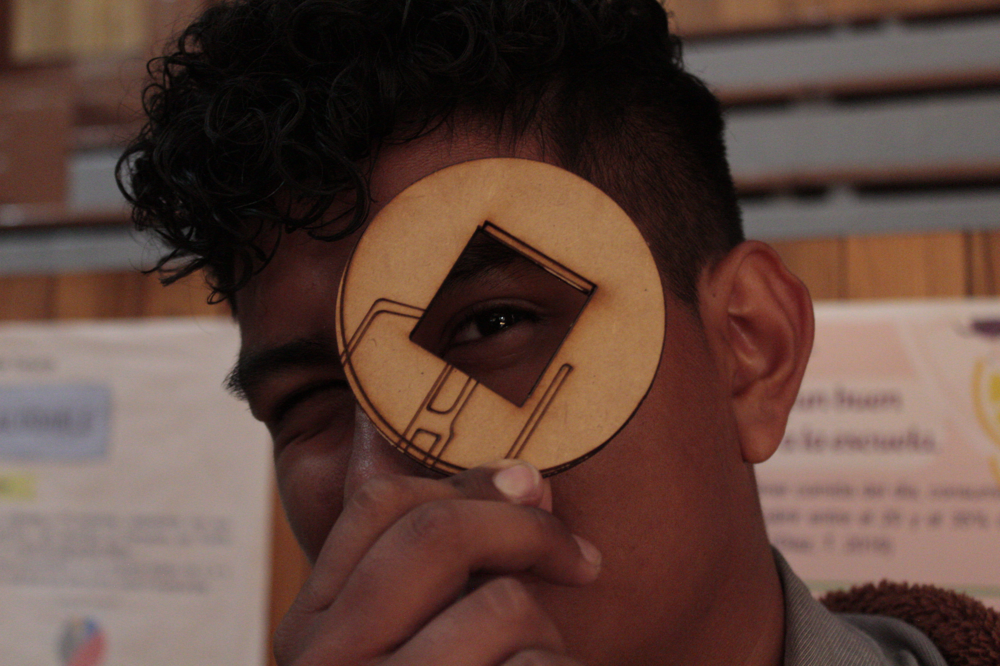

Artista digital en formación, con base en la UAM Lerma. Mi práctica cruza programación, fotografía, edición de audio y video — pero no se limita a la técnica: me interesa el arte como posibilidad de apertura, como grieta que recuerda que hay otras formas de vivir el mundo.
Mis obras abordan temas sociales y procesos de descubrimiento personal. Creo en un arte que no pretende salvar, pero sí sacudir. Que incomoda, activa la memoria, propone otras formas de habitar lo común.
El arte que me interesa es tenso, contradictorio, encarnado. Un arte que falla. Y por eso, persiste.
El Sendero de los Muertos — Festivarte
Cortometraje experimental de tres minutos que combina lenguaje cinematográfico con visualización generativa en TouchDesigner. Explora cómo la identidad personal se ve fracturada por las voces externas — a partir de Bandura: autoimagen, autoestima, autoeficacia.
Los visuales fragmentados y una composición sonora que alterna entre lo íntimo y lo invasivo revelan la fragilidad de la identidad construida desde la mirada ajena.
Plataforma web que conecta memoria colectiva y participación comunitaria. Permite registrar relatos en texto y fotografía vinculados a lugares específicos. Los espacios cotidianos se convierten en puntos de encuentro cargados de significado emocional.
Ver obra →
Instalación interactiva de sitio específico que reactiva la memoria ambiental del territorio donde hoy se erige la UAM Lerma. Engranes activados por servomotores aceleran cuando un sensor Kinect detecta al espectador, revelando la universidad edificada sobre la antigua ciénaga mientras sonidos de agua y fauna perdida llenan el espacio.
![[EC]H2O](styles/WhatsApp Image 2025-05-10 at 1.23.55 PM.jpeg)

![[EC]H2O](styles/_MG_7278.JPG)

Obra web de narrativa no lineal que invita a explorar la lengua zapoteca a través de la poesía generativa. Cada usuario construye su propio poema; las decisiones desbloquean imágenes como huellas. Al concluir, el sitio se reinicia. Un llamado a reconocer la diversidad cultural como memoria viva.
Ver obra →
Videojuego que recrea la travesía hacia el Mictlán. Más allá del homenaje, es un llamado a mirar la diversidad cultural de México: culturas zapoteca, maya, mixteca, totonaca, mazahua, otomí. El conocimiento ancestral convertido en experiencia reflexiva.
Jugar →
Mirada íntima a la construcción de la identidad desde las vivencias del equipo. Inspirado en el cubo Rubik: cada cara representa a uno de los miembros, codificada con un color que remite a su personalidad e historia. La obra no ofrece respuestas — abre una ventana a lo que permanece oculto.
Ver obra →
Serie fotográfica que explora el cuerpo como primer territorio de identidad. La cámara como herramienta de introspección y el encuadre como decisión política: ¿desde dónde me miro? ¿cómo elijo ser visto?

El arte está roto. Y qué bien.
Se ha roto contra las vitrinas, contra los discursos reciclados, contra los límites que lo querían puro, funcional, presentable. El arte ya no cabe donde antes cabía. Y eso no lo debilita. Lo libera.
El arte falla.
Y fallar no es morir.
Fallar es insistir por otra vía.
El arte cómodo ya no nos alcanza.
Hoy me interesa el que no encaja. El que interrumpe. El que no quiere decorar nada. El que piensa, molesta, falla, incomoda.
No me interesa el aplauso.
Me interesa la incomodidad que deja una buena herida.
Todo arte nace en contexto.
No hay neutralidad. No hay afuera. Como plantea Emmelhainz, el arte puede reconfigurar lo sensible. Como señala Rancière, puede desordenar lo que parecía dado. Eso es político, aunque no parezca panfleto.
En México, el arte no puede hacerse el distraído.
No se puede crear como si no hubiera lodo bajo los pies. Aquí, donde las desigualdades se sienten en el cuerpo, no podemos seguir fingiendo universalismos.
Ese que no tematiza las cosas urgentes, sino que las activa. La pobreza, el extractivismo, la violencia, la devastación ambiental. No como tópicos, sino como memoria. Como presencia viva.
Un arte que no representa.
Un arte que se vuelve canto ritual.
Rechazo el arte que se mira a sí mismo y se aplaude.
Reivindico el arte que se fuga, que colabora, que se arriesga.
Y, sobre todo, que se permite fallar.
Llamamiento
A quienes crean: Que no olviden que su obra tiene cuerpo, eco, historia.
A quienes enseñan: Que abran el espacio para el error. Para la ternura crítica.
Y a todos: No dejemos de crear. No para adornar. Sino para desarmar. Para abrir. Para imaginar.
Porque el arte no es lujo. Es derecho. Es urgencia. Es memoria. Es cuerpo. Es falla.
Creamos para no desaparecer.
Creamos para existir de otra manera.
